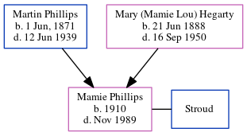

Mamie Stroud (née Phillips) 1910 - 1989
[ Home ] | [ Calendar ] | [ Surnames Index ] | [ Census Index ] | [ Family History ]The child of Martin Phillips and Mary (Mamie Lou) Hegarty, Mamie Phillips, the great-aunt of Michele Copp (née Phillips), was born in Georgia in 19101,2. She and was married to Stroud. In 1920, she was living in Atlanta Ward 3, Fulton, Georgia2.
She died in Nov 1989 in Greenville, Greenville, South Carolina, USA.
Parents
- Martin Eugene was born on Jun 1, 1871
- Mary (Mamie Lou) was born on Jun 21, 1888
Citations
- 1910 United States Federal Census Online publication - Provo, UT, USA: The Generations Network, Inc., 2006. For details on the contents of the film numbers, visit the following NARA web page: NARA.Original data - United States of America, Bureau of the Census. Thirteenth Census of the Unit
- 1920 United States Federal Census Online publication - Provo, UT, USA: MyFamily.com, Inc., 2005. For details on the contents of the film numbers, visit the following NARA web page: NARA. Note: Enumeration Districts 819-839 on roll 323 (Chicago City.Original data - United States of America
Family Tree
Generated by ged2site. Last updated on Jun 6, 2024